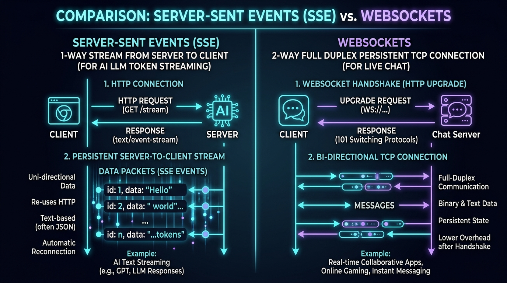

In standard HTTP requests, the browser asks for data and the server replies. But how does a server send instant live data (like a new WhatsApp message, a ChatGPT token word-by-word, or a live stock price ticker) without the user constantly refreshing the page?

Figure 1: Comprehensive comparison of modern real-time protocols (Long Polling, Server-Sent Events, WebSockets, and gRPC).
1. The Four Contenders in Simple Terms
1. Long Polling: The Impatient Passenger 🚗
The client sends an HTTP request: "Do you have new messages?" The server holds the request open until new data arrives, responds, and closes the connection. The client immediately fires another request.
- Analogy: A kid in the backseat asking: "Are we there yet? No. Are we there yet? No."
- Drawback: Huge HTTP header overhead (re-authenticating and sending cookies on every cycle).
2. Server-Sent Events (SSE): The Live Radio Broadcast 📻
The client opens a single HTTP connection (Content-Type: text/event-stream), and the server pushes text data down this open pipe whenever it wants.
- Direction: 1-way (Server ➔ Client only).
- Why ChatGPT uses SSE: When you prompt ChatGPT, you send one prompt (Client ➔ Server). The AI then streams 150 words back to you token-by-token (Server ➔ Client). You don't need a heavy 2-way WebSocket for that!
// Browser Client consuming ChatGPT-style SSE stream
const eventSource = new EventSource('/api/chat/stream');
eventSource.onmessage = (event) => {
const token = JSON.parse(event.data).text;
document.getElementById('chat-box').innerText += token;
};
3. WebSockets: The 2-Way Phone Call 📞

Figure 2: 1-way streaming SSE (AI LLM Token Generation) vs 2-way persistent WebSockets (Live Chat).
WebSockets start with an HTTP handshake (HTTP/1.1 101 Switching Protocols) and immediately upgrade the connection into a persistent, full-duplex TCP socket.
- Direction: 2-way (Both Client and Server can transmit data anytime independently).
- Why WhatsApp & Gaming use WebSockets: Both users in a chat are sending and receiving messages simultaneously. WebSockets have virtually zero per-message header overhead (only 2 to 6 bytes frame overhead!).
// Client WebSocket connection in Node.js / Browser
const socket = new WebSocket('wss://chat.whatsapp.com/ws');
socket.onopen = () => {
socket.send(JSON.stringify({ type: 'MSG', text: 'Hey Harshit! ☕' }));
};
socket.onmessage = (event) => {
console.log('Received live message:', event.data);
};
Figure 3: Real-world UI behavior: ChatGPT token streaming via SSE vs. WhatsApp instant two-way chat via WebSockets.
4. gRPC: The Internal Microservice Rocket 🚀
While WebSockets and SSE are used between browsers and servers, gRPC (Google Remote Procedure Call) is built on top of HTTP/2 for ultra-fast communication between internal backend microservices.
- Protocol Buffers (Protobuf): Data is serialized into compact binary format rather than heavy JSON text strings, resulting in 7x to 10x faster serialization!
- Multiplexing: Hundreds of RPC calls share a single TCP connection concurrently.
2. Decision Cheat Sheet: Which One Should You Pick?
| Your Use Case | Recommended Protocol | Why? |
|---|---|---|
| AI Assistant / LLM Streaming (ChatGPT) | SSE (Server-Sent Events) | 1-way stream, built-in reconnection, native HTTP/HTTPS proxies. |
| Chat Apps & Live Collaboration (WhatsApp, Figma) | WebSockets | Sub-20ms 2-way bidirectional messaging with minimal framing overhead. |
| Internal Microservice Communication (Uber / Netflix) | gRPC | Strict Protobuf typing, binary efficiency, HTTP/2 streaming. |
| Simple Periodic Alerts in Legacy Apps | Polling / Long Polling | Zero custom infrastructure required; works behind strict corporate firewalls. |
3. Summary & Key Takeaways
- Long Polling: Inefficient HTTP polling for simple legacy needs.
- SSE: Perfect for 1-way streaming from server to browser (LLM outputs, sports tickers).
- WebSockets: The gold standard for real-time 2-way interactive collaboration.
- gRPC: High-throughput binary RPC communication between backend microservices.
💬 Join the Discussion
Which protocol do you use in your production systems: WebSockets, SSE, or gRPC? Share your thoughts on LinkedIn!